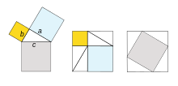

¿Qué es la Dinámica?
La física es otra de las ciencias que está dividida en ramas, tal como
la matemática.
Una de ellas es la Dinámica, sigue leyendo y aprende que es lo que estudia y …
“Quizá te generen un dolor de cabeza o quizá sea uno de tus pasatiempos el estudio de ellas”
Es un conjunto de lenguajes formales que pueden ser usados como herramienta
para plantear problemas de manera no ambigua en contextos específicos.
Dicho en palabras más sencillas es una ciencia formal que, partiendo de
axiomas y siguiendo el razonamiento lógico, estudia las propiedades y relaciones
entre entidades abstractas como números, figuras geométricas o símbolos matemáticos.
La matemática es una ciencia lógica deductiva, que utiliza símbolos para generar una teoría exacta de deducción e inferencia lógica basada en definiciones, axiomas, postulados y reglas que transforman elementos primitivos en relaciones y teoremas más complejos.
Un claro ejemplo de las matemáticas y muy popular es el teorema de Pitágoras, si, ese que nos ayuda a conocer el valor de alguno de los lados del triángulo. Con su formula: a2 + b2 = c2
Hoy en día, las matemáticas se usan en todo el mundo como una herramienta
esencial en muchos campos, entre los que se encuentran las ciencias naturales,
la ingeniería, la medicina y las ciencias sociales, e incluso disciplinas que,
aparentemente, no están vinculadas con ella, como la música (por ejemplo, en
cuestiones de resonancia armónica).
Las matemáticas aplicadas, rama de las
matemáticas destinada a la aplicación del conocimiento matemático a otros
ámbitos, inspiran y hacen uso de los nuevos descubrimientos matemáticos y, en
ocasiones, conducen al desarrollo de nuevas disciplinas.
Las matemáticas puras, que se encargan de estudiar la cantidad cuando está
considerada en abstracto.
En una subdivisión amplia de las matemáticas se distinguen cuatro objetos de estudio básicos: la cantidad, la estructura, el espacio y el cambio que se corresponden a la aritmética, álgebra, geometría y cálculo.
Se define como "el arte de contar". La aritmética es el área de la matemática que estudia los números enteros, racionales y números reales y las operaciones elementales que surgen entre ellos (la suma, la resta, la multiplicación y la división). Se incluyen aquí las potencias, radicales y algoritmos.
El álgebra es la rama de las matemáticas que emplea las letras para representar las operaciones aritméticas. La aplicación de esta parte de las matemáticas se realiza mediante estructuras más abstractas como operaciones con polinomios, ecuaciones y sistemas de ecuaciones, matrices y determinantes. Esta área de las matemáticas incluye, además, el álgebra lineal, que estudia las matrices, sistemas de ecuaciones de tipo lineal y vectores.
Dentro de las diferentes áreas de las matemáticas la geometría es la que se ocupa de estudiar las formas o figuras en el plano o el espacio. Incluye dentro otras áreas como la trigonometría, que se encarga específicamente de calcular el área y espacio de los triángulos.
El cálculo es el campo de aplicación de las matemáticas empleado para hacer estadística y probabilidad. Consiste en realizar las operaciones para prever el resultado de una acción. Incluye operaciones para calcular la media de un estudio, la distribución de las cosas, hacer estimaciones o muestreos.
La física es otra de las ciencias que está dividida en ramas, tal como
la matemática.
Una de ellas es la Dinámica, sigue leyendo y aprende que es lo que estudia y …
El concepto de ciencia es algo muy grande, así como su importancia. Por ello queremos invitarte a disfrutar del siguiente texto donde se describe un poco sobre la ciencia y su importancia en la humanidad.
Seguir leyendo